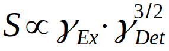

Index
Lecture 03
• On most Probe heads you can't measure Fluorine• Deuterium NMR is measured in Wine industry to find out if artificial sugar has been added
• NMR is rather insensitive, because both states, alpha and beta state are populated similarly, because the difference is very small
◇ This tiny population difference render it insensitive
• The gamma value is the relation between the spin and magnetic moment and is called the proportion factor
• Lower gamma-nuclei have lower sensitivity because gamma influences the frequency
◇ By planks-energy we know that Energy and frequency are related
◇ The smaller the gamma, the smaller the frequency and therefore the smaller the energy
• The signal is proportional according to this equation:

• If you want to increase signal to noise by a factor of two you dont need to measure twice as long, because the noise would also add up
◇ Between the scan, the noise is not the same
▪ Therefore the signal adds up coherently
▪ Noise increases by sqrt(2)
▪ This means you need to measure 4x as long
• HSQC boosts the sensitivity by a factor of 30
• NOE by a factor of 3
• INEPT (DEPT) by a factor of 4
• Using HSQC is a huge boost (H→ C → H) but you can't see quartery carbons.
• Quadrupolar nuclei may result in very broad lines
◇ This is because these nuclei are very sensitive to gradient in field (coming from ligands)
◇ If the ligands are homogenious spaced out, you get a nice sharp spectrum
◇ If the ligands are asymmetric, linewidth can go up to tenths of kilohertz
13
C-NMR
• Influence of C-chemical shift are:
Hybridization:
• Chemical shifts are distributed as (d= ppm)
◇ d(sp3)< d(sp)<d(sp2)
• Measuring Steroids in different solvents changes the H-Spectrum but not the C-Spectrum
◇ This is due to the ring current
Inductive Effects:
• electro-negativity has an effect
• In pentane the central CH2 has the highest shift which decrease towards the outside
• If a alcohol is placed, shift goes up
Steric Effects:
• rather big effects
Hyper-conjugative Effects:
• Interaction from p to sigma orbital shifts electrons and therefore changes the chemical shifts
Mesomeric Effects:
• In a mesomeric form you can deshield a carbon
• In esters and amide the shift is lower due to the possiblity of removal of the positive charge of the carbon.
• This can also be seen in rings, where you move the charges
• Charge in different positions have an influence on chemical shift
Symmetry:
• Symmetry has an impact
• Increment systems are calculated from:
◇ A basic value
◇ A value for the influence of all other carbons of the chain
◇ A steric component
Relaxation T1 times
• The relaxation is dominated by dipolar interaction with nearest proton
◇ It is important of how far the next carbon is away
• Methyl signals are higher than quarternary carbons because methyl relax very fast (proton nearby) and quarternary carbons relax very slowly (proton far away)
• Even if the relaxation times between pulses are taken long enough for quarternary carbons to fully relax, the signal will still be smaller because it doesnt do NOE but methyl does.
◇ If you want the same intensity you measure an inverse gated spectrum
◇ It works by temporaerly disableing the coupler during the relaxation time (google it!)
• C-C couplings are dependent on hybridization
◇ In 13C we normally dont see C-C couplings, because the probabilty of the heavy carbon is 1% next to a heavy carbon. This 1% compared to the 99% of 12C neighbors is mostly lost in the noise
• In C-H couplings the J coupling is dependent on the s-character (hybridization): J (sp3)<J(sp2)<J(sp)
• For 3J(C,H) there is a Karplus curve
• 13C-19F couplings are important as many drugs contain Fluorine
◇ You can't decouple Fluroine or phosphoryus
• If you suspect to have a coupling, go to a different field strength as chemical shift stays the same, but couplings change
• DEPT are polarizaiton experiments
• The number of DEPT gives the angle of the pulse of the proton
• In DEPT90 you only see CH carbons
• In DEPT135 CH2 are negative
• In DEPT135 you may not be able to distinguish between CH and CH3 → Go to DEPT90 where you only see CH
• DEPT spectra are polarization transfer experiments
• In DEPT you loose the quarternary carbons
• The chemical shifts depend on electron density (depend therefore on HOMO-LUMO gap)
◇ HOMO-LUMO gap is dependent on the reactivity of an atom
• Carbon shift decreases with increasing reactivity